练习配置手顺（C0〜C16）
.png 放进 assets/gui/ 后执行 python3 tools/swap_gui_images.py <site> --apply 即可一键替换。① ETO 的标准值环境差最大（戦略グループ、WBS を割り当てられる明細カテゴリ、評価付プロジェクト在庫の扱い）→ 先确认、后自建； ② 练习用对象命名：
ZETO-FG01/ZETO-RM01/02（品目）、ZETO-1000（プロジェクト）、ZETO01（プロジェクトプロファイル）、WBS .1/.2/.3、ネットワーク 3000001；
③ 所有改动记入你的カスタマイジング依頼；
④ PS の設定はプロファイルに集約されるので、「どのプロファイルを使っているか」を常に意識する（迷ったら CJ20N のプロファイルから逆引き）。配置前的准备
PS の設定は SD/PP/MM より「プロファイル」に依存します。着手前に ① PS の権限（CJ20N・CJ30・CJI3・CJ88）② 制御エリア・会社コード・プラントの整合
③ カスタマイジング依頼 を確認してください。また、既存の標準プロファイル（CJ20N で選択できるもの）を 1 つ選び、それを「正解の見本」として読み解く進め方が最短です。
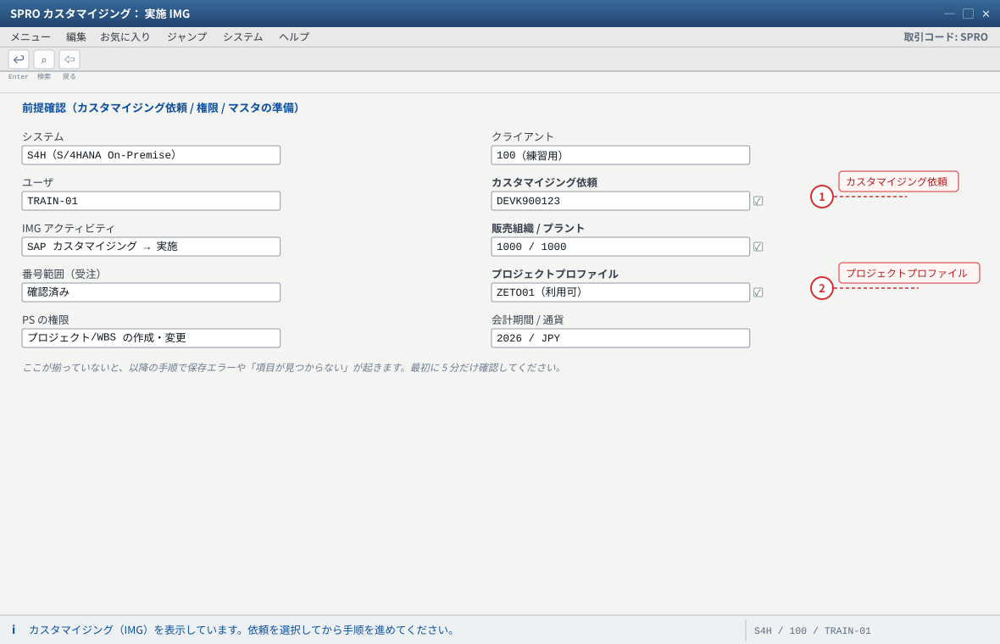
- 1 依頼を指定しないと保存できない
- 2 ETO は PS の権限が無いと何も始まらない
プロジェクトプロファイルが選べない場合は番号範囲（OPSA）と権限を確認してください。
前提与环境确认
CJ20N・VA01・MMNR・BP/XD03- 目的
- PS/SD の基礎が欠けたまま進むと、後半（予算・決済）で必ず詰まる。
会社コード 1000 / プラント 1000 / 出荷プラント 1000 / 制御エリア（会社コードに割当て済み） 販売組織 1000 / 販売チャネル 10 / 部門 00 ／ 得意先 1000（販売エリアビュー＋出荷先） 品目タイプ FERT / ROH・HAWA の品目番号範囲、受注・出荷・請求・製造指図の番号範囲 PS：プロジェクト定義／WBS の採番（コーディングマスク）が使えること
CJ20Nを起動 → 「作成」でプロジェクトを新規に開始し、プロファイルが選択できること、WBS の ID 採番が通ることを確認 → 保存せずに戻る。VA01で 販売エリア1000/10/00、得意先1000が選べることを確認（保存はしない）。- 権限確認：
CJ20N・CJ30・CJI3・CJ88・MD51・CO08・VL01N・VF01。
CJ20N でプロジェクトを新規作成でき（保存しなくても可）、WBS の ID がエラーなく採番されれば前提 OK。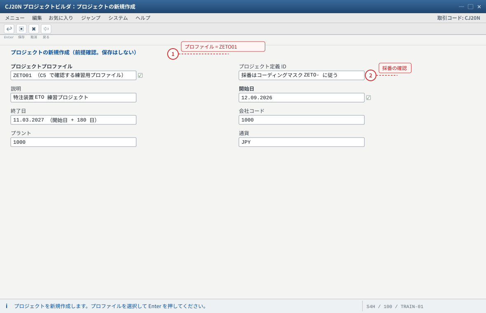
- 1 プロファイルが選べる＝PS 設定の前提。ここが空だと番号範囲か権限が疑わしい
- 2 WBS の ID はコーディングマスク＋番号で決まる（例 ZETO-1000.1）
自システムでの確認：保存せずに戻ってよければ前提 OK。プロファイルが選べない場合は OPSA（プロファイル）の番号範囲と権限を確認します。
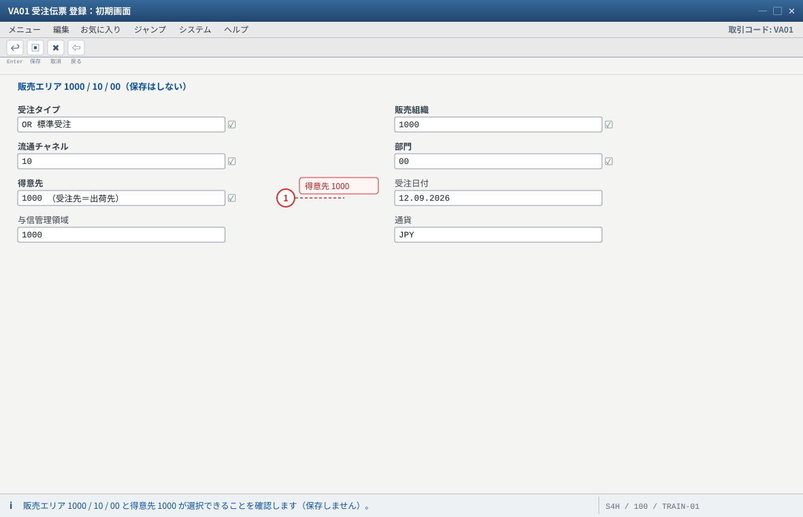
- 1 得意先 1000 は販売エリアビューと出荷先が揃っていること。欠けると受注が保存できない
自システムでの確認：得意先 1000（BP / XD03）と品目タイプ FERT / ROH / HAWA の品目番号範囲（MMNR）も併せて確認します。
部品品目（ZETO-RM01 / ZETO-RM02）
MM01- 目的
- BOM 部品を用意する。本教程は初期在庫で賄い（購買は発展課題）、部品は自由在庫のままにする。
| 项目 | ZETO-RM01 | ZETO-RM02 | 视图 |
|---|---|---|---|
| 品目タイプ / 単位 / 品目グループ | ROH / PC / 001 | HAWA / PC / 001 | 基本データ1 |
| 購買グループ / 調達タイプ | 001 / 外部調達 | 001 / 外部調達 | 購買 |
| MRPタイプ / ロットサイズ / 手配タイプ | PD / EX / F | PD / EX / F | MRP1 |
| 評価クラス / 価格管理 | （例）3000 / S | （例）3000 / S | 会計1 |
| 初期在庫 | 100 PC（561） | 500 PC（561） | MIGO |
MM01で 2 品目を登録（ビュー：基本1・2 / 購買 / MRP1〜4 / 会計1 / 原価計算1 / プラント在庫 / 保管場所）。- MRP4「個別/包括所要量」は空のまま（部品は自由在庫。ここを個別所要量にすると部品まで受注/プロジェクト在庫扱いになる）。
MIGO（またはMB1C）で移動タイプ561により初期在庫を投入。
MMBE で RM01 100 PC、RM02 500 PC（非制限使用）。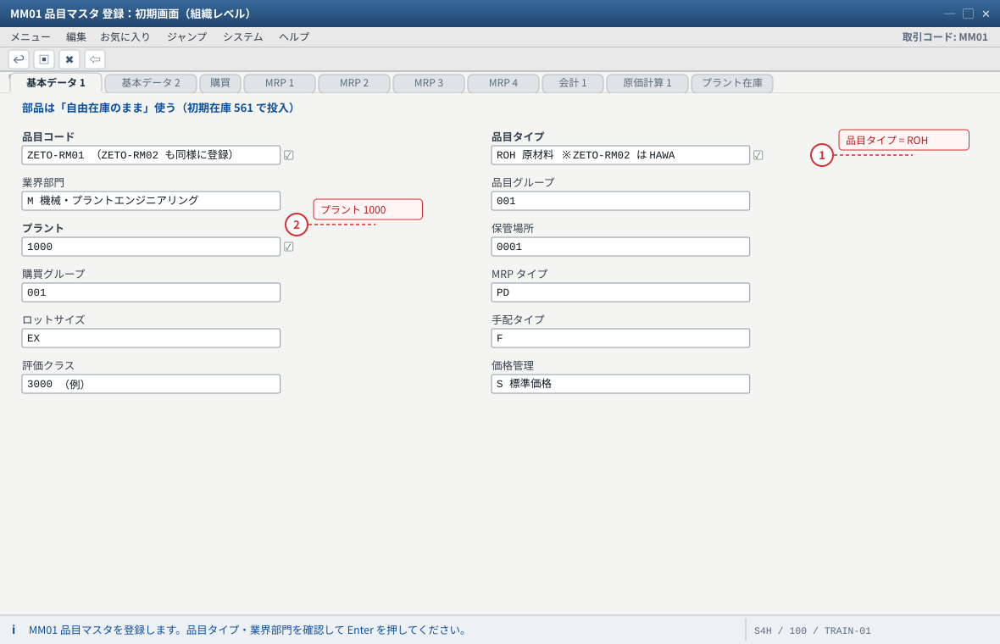
- 1 部品は自由在庫。MRP4 の個別所要量は空のままにする（部品まで Q にすると在庫が追えない）
- 2 初期在庫は後続の MIGO（移動タイプ 561）で投入する
自システムでの確認：品目タイプ ROH / HAWA の品目番号範囲に空きがあるかを MMNR で確認します。
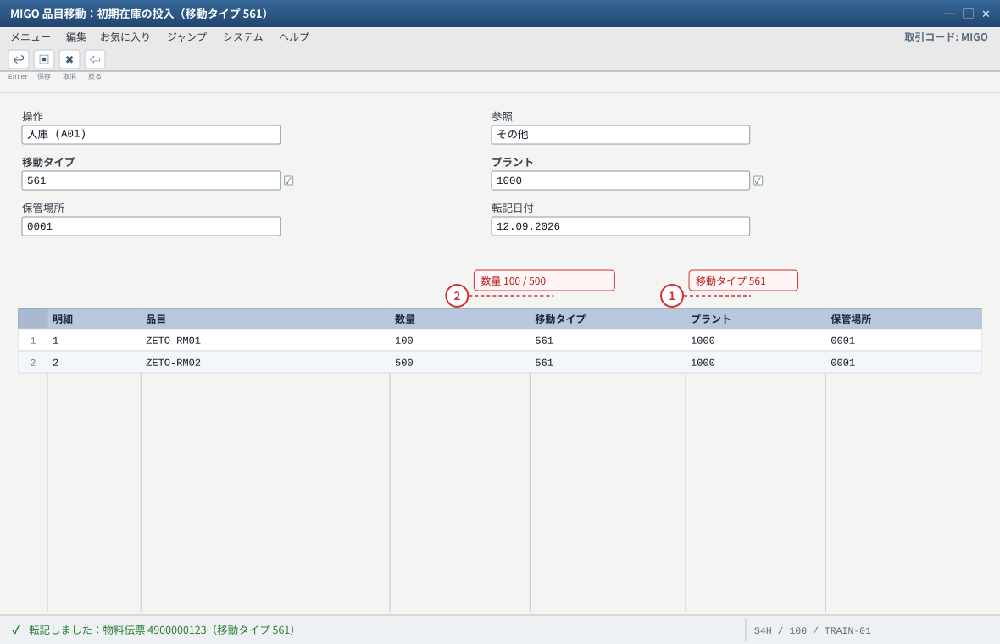
- 1 561 は初期在庫投入用。部品は自由在庫に入る（Q にはしない）
- 2 本教材は部品を初期在庫で賄う（購買は発展課題）
自システムでの確認：MB1C（561）でも同じ結果になります。実績は MMBE で非制限使用在庫 100 / 500 PC として確認します。
完成品品目 ZETO-FG01（ETO 的核心主数据）
MM01 / MM02 / MM03- 目的
- 让它成为 個別所要量品目：MRP4 個別所要量 ＋ MRP3 戦略グループ（評価区分 M を持つ所要量クラス）。この 2 つがプロジェクト在庫 Q の土台。
| 视图 | 项目 | 值 | 为什么 |
|---|---|---|---|
| 基本データ1 | 品目タイプ / 単位 | FERT / PC（1 式） | — |
| 販売組織2 | 品目カテゴリグループ | 0001（NORM） | 明細カテゴリ決定のキー（ETO 専用の標準キーは無い） |
| 販売組織2 | 税区分 / 品目統計グループ | （例）MWST / 1 | 請求に必要 |
| MRP1 | MRPタイプ / ロットサイズ / 手配タイプ | PD / EX / E | 内製（製造指図）。手配タイプ空だと手配が生まれない |
| MRP3 | 戦略グループ | 自系统的 ETO 用戦略グループ（例 E2） | 所要量タイプが Q（プロジェクト在庫） を指すための入口 |
| MRP3 | 在庫確認 / 消費モード | 個別所要量ベース（例 02）/ 空（MTO・ETO は PIR を使わない） | — |
| MRP4 | 個別/包括所要量 | 個別所要量のみ | 評価付プロジェクト在庫の前提（SAP Help / SAP Learning） |
| 会計1 | 評価クラス / 価格管理 / 原価計算 | （例）7920 / S / 標準原価見積 | プロジェクト在庫が評価される場合の金額の出どころ |
| 原価計算1 | 原価計算ロットサイズ / バリアント | （例）EX / 標準 PP 用 | 指図の標準原価（差異の基準） |
MM01→ZETO-FG01/FERT→ 上表のビューを選択して入力。- 戦略グループが選べない/見つからない場合：
OPPJ（計画方針グループの定義）で ETO 用の戦略グループが存在するか確認する。存在しなければ 自システムの ETO 用戦略（受注設計生産・評価区分 M の所要量クラスを指すもの）を特定し、その値を品目に設定する（勝手に標準値を捏造しない）。 - 保存後
MM03で MRP3 戦略グループ・MRP4 個別/包括所要量 を再確認。
MM03 MRP4 = 個別所要量のみ ② MRP3 の戦略グループを OPPJ/OPPS で展開し、指す所要量クラスを OVZG で開いて 評価区分（M など） と 個別在庫 の設定を確認する。② 参考：S/4HANA Cloud の ETO（6GD）は戦略グループ
E2、所要量タイプ E21（特別在庫 Q）を使う（SAP KBA 3623492）。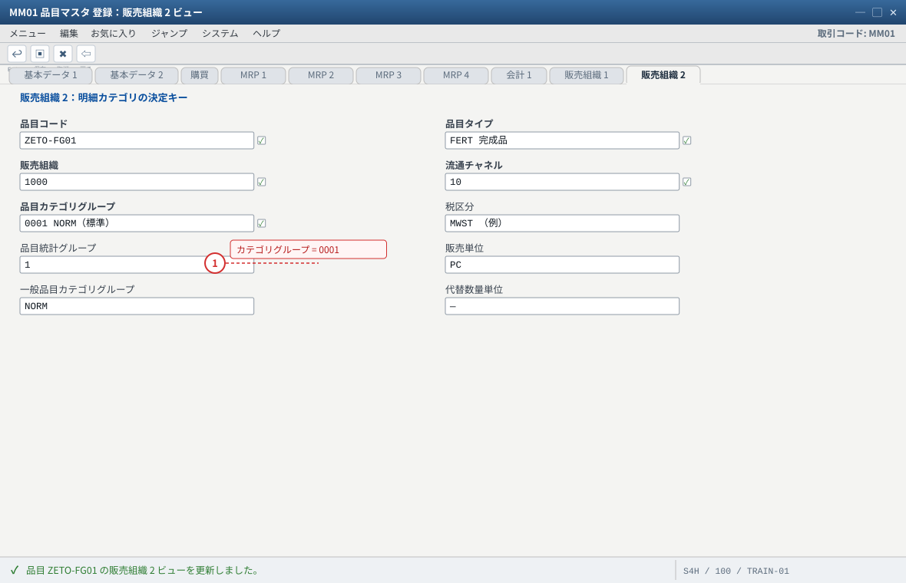
- 1 品目カテゴリグループは明細カテゴリの決定キー（ETO 専用の標準キーは無いので NORM を使う）
自システムでの確認：決定キーは VOV4（明細カテゴリの決定）で確認します。WBS を割り当てられるのはどの明細カテゴリかは C10 で実測します。
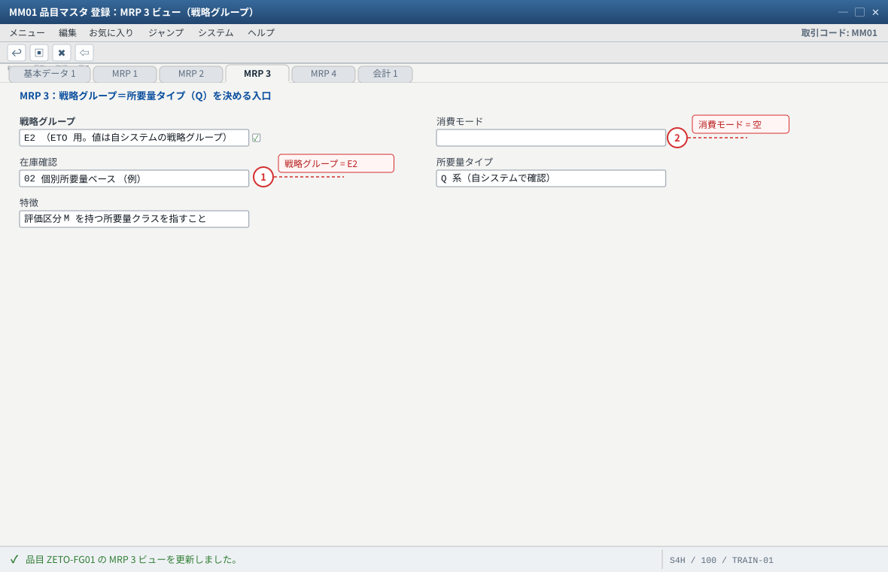
- 1 戦略グループが Q（プロジェクト在庫）を指す所要量タイプを決める。ここが受注生産（E 系）のままだと E のまま
- 2 消費モードは空のまま（ETO / MTO は PIR を使わない）
自システムでの確認：戦略グループの値は環境ごとに異なります。OPPJ（計画方針グループ）→ OPPS → OVZG（所要量クラス）の順に展開し、評価区分（M など）と個別在庫の設定を確認してください。S/4HANA Cloud の ETO（6GD）は E2 / 所要量タイプ E21（KBA 3623492）。
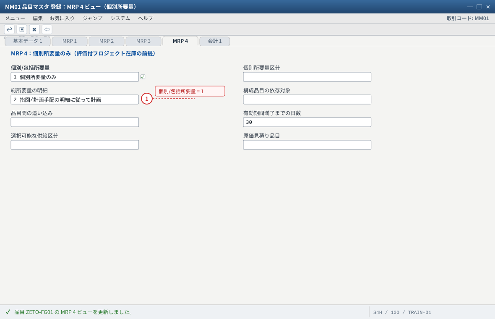
- 1 1 = 個別所要量のみ。ここが集合所要量だと需要が WBS に帰属せず、Q が成立しない
受注在庫（E）／プロジェクト在庫（Q）にしたい品目は、ここが「個別所要量のみ」であることが前提です（SAP Help）。保存後は MM03 で MRP3 の戦略グループと MRP4 を再確認します。
BOM・作業区・作業手順
CS01・CR01・CA01BOM（CS01） : 親 ZETO-FG01 / プラント 1000 / 用途 1 → 0010 ZETO-RM01 ×2、0020 ZETO-RM02 ×8 作業区（CR01） : ZETO_WC01「組立・調整」（プラント 1000 / 能力 8H/日） 作業手順（CA01） : 工程 0010「組立」/ 作業区 ZETO_WC01 / 標準時間 4H / 単位 PC
- 3 つを登録し、
CS03/CR03/CA03で表示確認。 - （発展）部品を外注で賄う場合は、BOM 明細の調達タイプを
F＋購買情報レコード（ME11）まで用意すると、発注連携まで通せる。
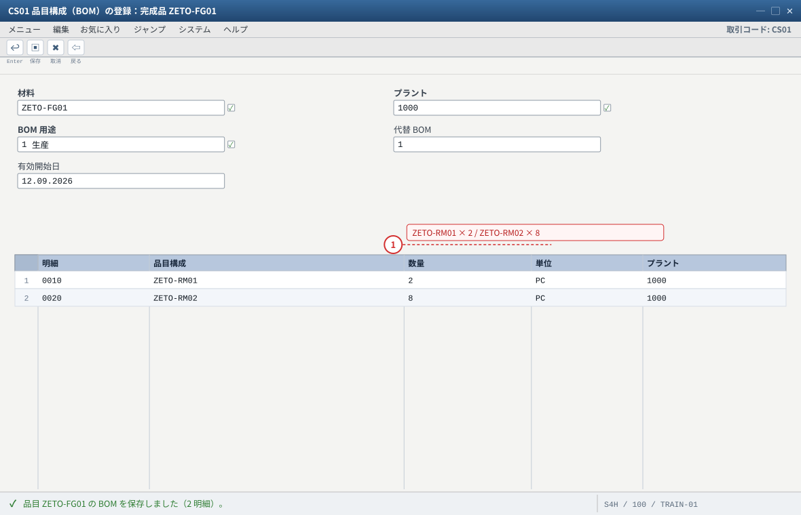
- 1 ここが指図の部品所要量（予約）の出どころ。0 件だと CO03 の構成品目が空になる
自システムでの確認：有効日・プラント・用途が合っていないと CO40/CO08 で構成品目が展開されません（CS03 で確認）。外注にする場合は BOM 明細の調達タイプと購買情報レコード（ME11）まで用意します。
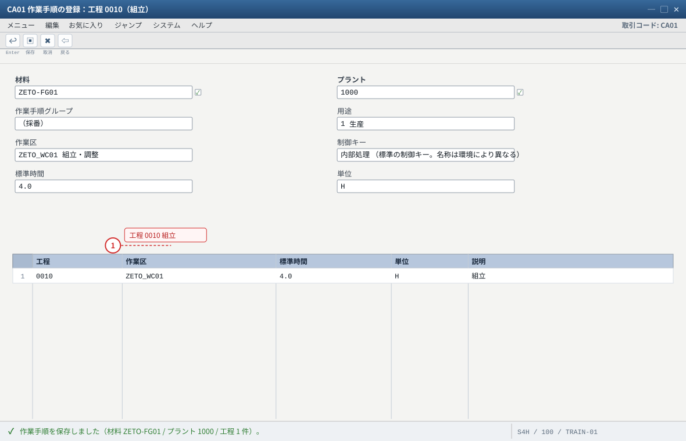
- 1 工程 0010 が CO11N の実績入力先（工程 0010）になる
自システムでの確認：制御キーの名称・値は環境ごとに異なります（標準の「内部処理」「外部処理」系を使用）。作業区 CR01 はプラント 1000・能力 8H/日で登録します。
価格条件（受注金額）
VK11 / VK13条件タイプ PR00（標準を確認）/ 販売組織 1000 / チャネル 10 / 得意先 1000 品目 ZETO-FG01 / 金額 5,000,000 JPY / 1 PC / 有効期間 今日〜+1年
VK11で登録 →VK13で確認。- ETO では金額が「案件ごと」に決まることが多いので、条件レコード＋手動変更のどちらで運用するかを受講者に考えさせる（練習は条件レコードで固定）。
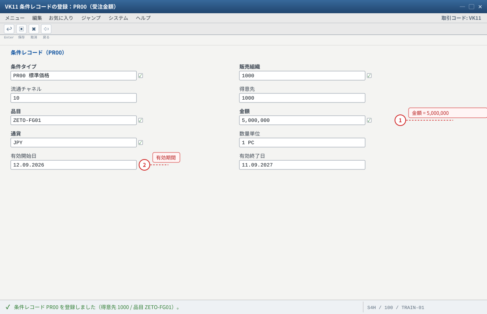
- 1 受注明細の単価はここから自動決定される。ここが 0 だと請求金額も 0 になる
- 2 ETO では案件ごとに価格が動く。条件＋手動変更のどちらで運用するかを決めておく
自システムでの確認：条件タイプ PR00 が有効か、アクセス順序（V/08）で得意先×品目が先に決まるかを確認します。分割請求の内訳（30%/70%）は請求計画側で持ちます。
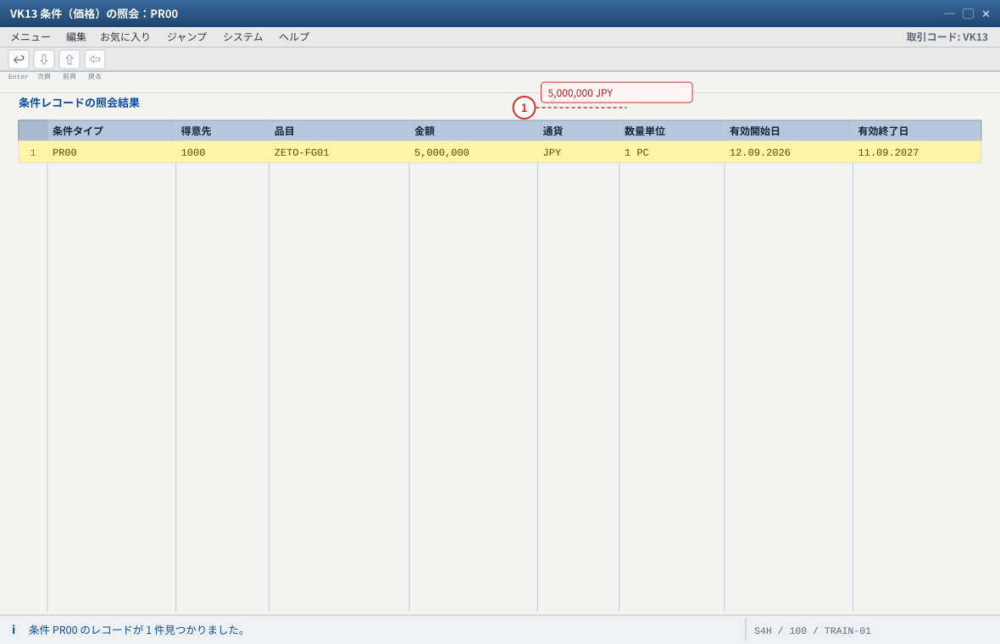
- 1 受注を保存する前に、ここで金額が決定できることを確認しておく
自システムでの確認：条件レコードが有効期間外だと受注時に金額 0 になります。VK13 の有効開始/終了日を見てください。
プロジェクトプロファイルとコーディングマスク
OPSA（IMG）- IMG 路径
- Project System > Structures > Operative Structures > Work Breakdown Structure > Create Project Profile（事务码
OPSA） - 目的
- PS 的「控制面板」：番号範囲、WBS 画面、予算プロファイル、決済パラメータ、ステータスプロファイル、日付/計画の既定値などをひとまとめにする。
OPSA→ 既存の標準プロファイル（CJ20Nで選べるもの）を 1 つ決め、表示（照会）して主要項目を読み取る：
・番号範囲（プロジェクト定義/WBS） ・予算プロファイル ・決済パラメータ/決済ルールの既定 ・ステータスプロファイル ・計画要素の既定- （任意）練習用に
ZETO01としてコピー作成し、説明を「ETO 練習用」に。以降の練習はこのプロファイルで行うと差分が追いやすい。 - WBS の ID は「コーディングマスク＋番号」で決まる。コーディングマスク（例
ZETO-）を確認し、WBS の採番がどう決まるかを理解する（プロジェクトの特殊文字定義/編集マスク）。 - プロジェクトタイプ（WBS 要素のタイプ）：IMG の SM30 ビュー
V_TCJ1（WBS 要素のプロジェクトタイプ）で確認する。
CJ20N で新規作成 → プロファイルを選択 → WBS を 1 件作って ID を見る（ZETO-1000.1 のような形で採番されるか）。採番や階層のルールがここで腹落ちすると、後の練習が速い。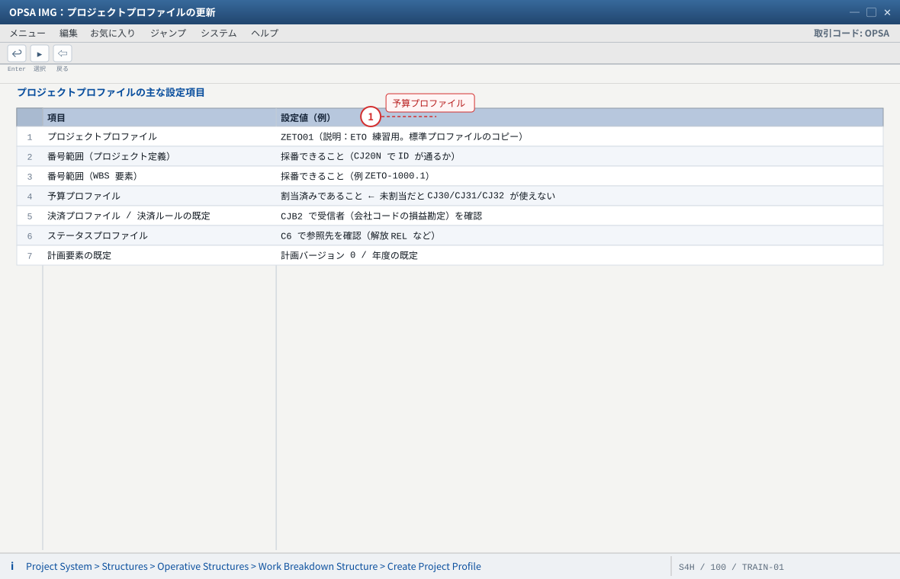
- 1 PS のトラブルはまずここに戻る。予算が使えない・決済できないはプロファイルが原因のことが多い
項目名は環境・バージョンで異なることがあります。迷ったら CJ20N のプロジェクトからプロファイルを逆引きし、どのプロファイルを使っているかを常に意識してください。
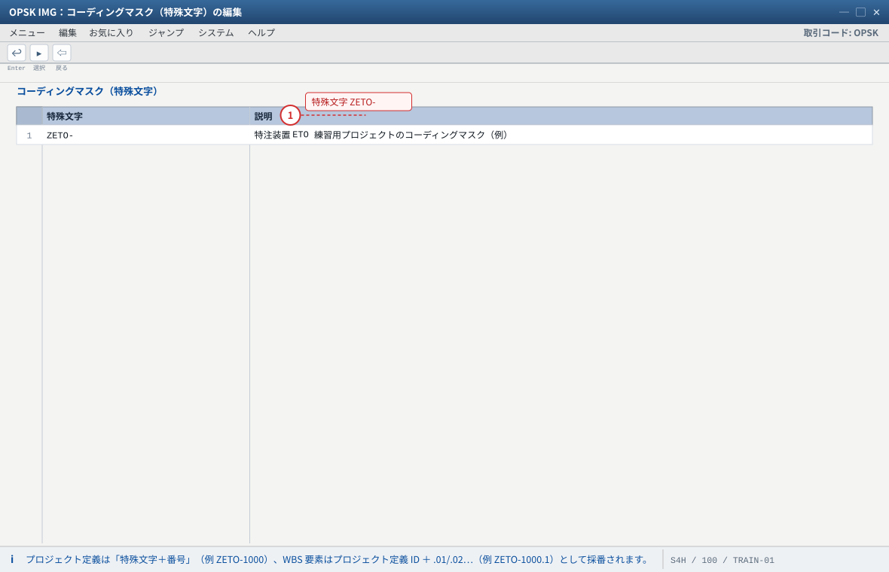
- 1 採番のルールが腹落ちすると以降の練習が速い（WBS の ID を自分で読めるようになる）
自システムでの確認：WBS の採番（編集マスク）はプロジェクトプロファイルと番号範囲の組み合わせで決まります。CJ20N で WBS を 1 件作り、実際の ID を見るのが最短です。
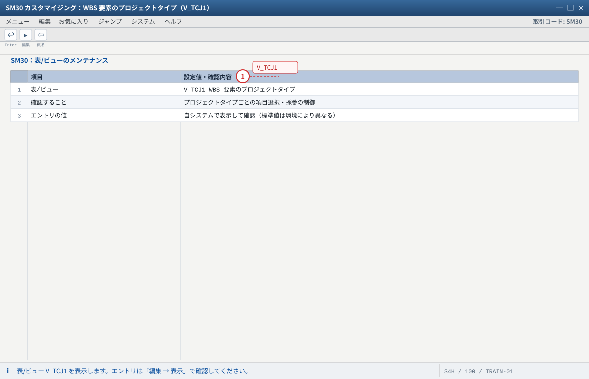
- 1 WBS 詳細に「請求要素」が出ないときは、このタイプの項目選択を疑う
自システムでの確認：プロジェクトタイプの値と説明は環境ごとに異なるため、行の値は省略しています。CJ20N の WBS 詳細で使われているタイプと突き合わせて確認してください。
ユーザステータス（プロジェクト・WBS・ネットワーク）
IMG / ステータスプロファイル- 目的
- 「解放（REL）」「技術完了（TECO）」「ロック」など業務上の節目を制御する。予算/決済/請求の可否がステータスで変わることがある。
- IMG：Project System > Structures > Operative Structures > ユーザステータス（プロジェクト定義/WBS/ネットワーク）で既存のステータスプロファイルを照会する。
- プロファイル（C5 で見たもの）から参照されているステータスプロファイルを特定し、どのステータスが何を許可するか（例：REL でないと実績を計上できない等）をメモする。
- 練習では標準のまま使う（変更は発展課題）。
CJ20N → プロジェクト → メニュー「編集」→「ステータス」→「解放」を実行し、WBS/ネットワークのステータスが変わることを確認（本番環境では行わない）。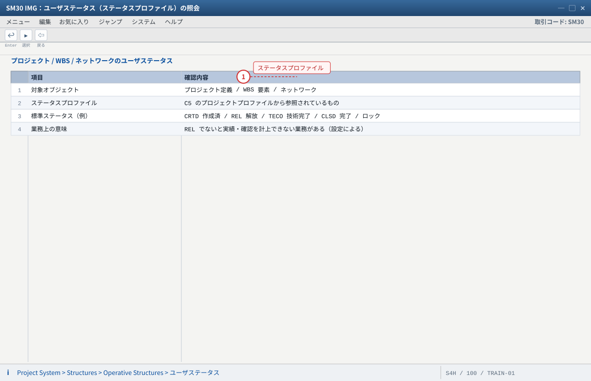
- 1 予算・決済・請求の可否がステータスで変わる。プロファイルから参照先を特定して読む
本番環境ではステータス変更を行わないでください。練習では標準のまま使い、変更は発展課題とします。
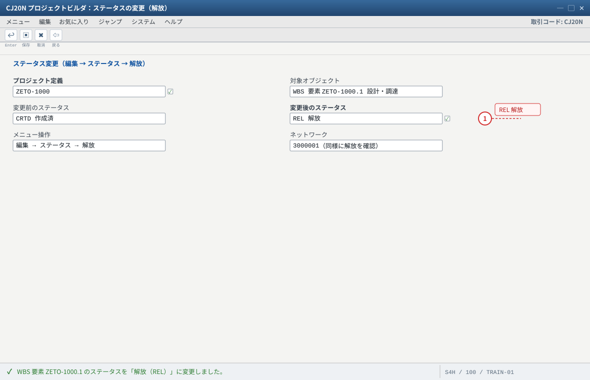
- 1 解放後に実績・確認が計上できるようになる。ここを忘れると CO11N や 261 が止まる
自システムでの確認：ステータスの名称・遷移はステータスプロファイル次第です。CJ20N の「ステータス」メニューに出る選択肢がこの環境の正解です。
ネットワークタイプ・パラメータ・プロファイル
IMG: Project System > Networks- IMG：Project System > Networks > ネットワークタイプの更新 → 既存タイプを確認（番号範囲・標準値・確認/原価の制御）。
- ネットワークタイプのパラメータ指定（標準値：作業区・制御キー・単位など）。
- ネットワークプロファイルの更新 → 使用するプロファイルの既定値（プラント・制御キー等）を確認。
- ネットワークの番号範囲に空きがあることを確認（練習で採番するため）。
CN21 でネットワークを 1 件作成（プロファイルを選択・活動 0010 を追加）→ 保存できること。作成後に CN23 で表示。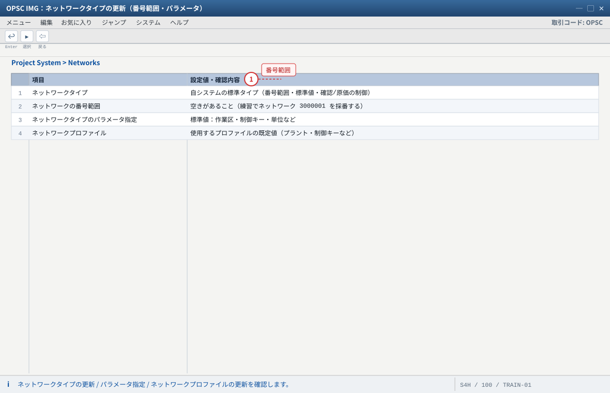
- 1 番号範囲に空きが無いと CN21 の保存で採番エラーになる
Public Cloud ではネットワークの利用範囲がスコープアイテム次第です（6GD は WBS 単位の計画・実行が中心）。Cloud 受講者は Test Script を優先してください。
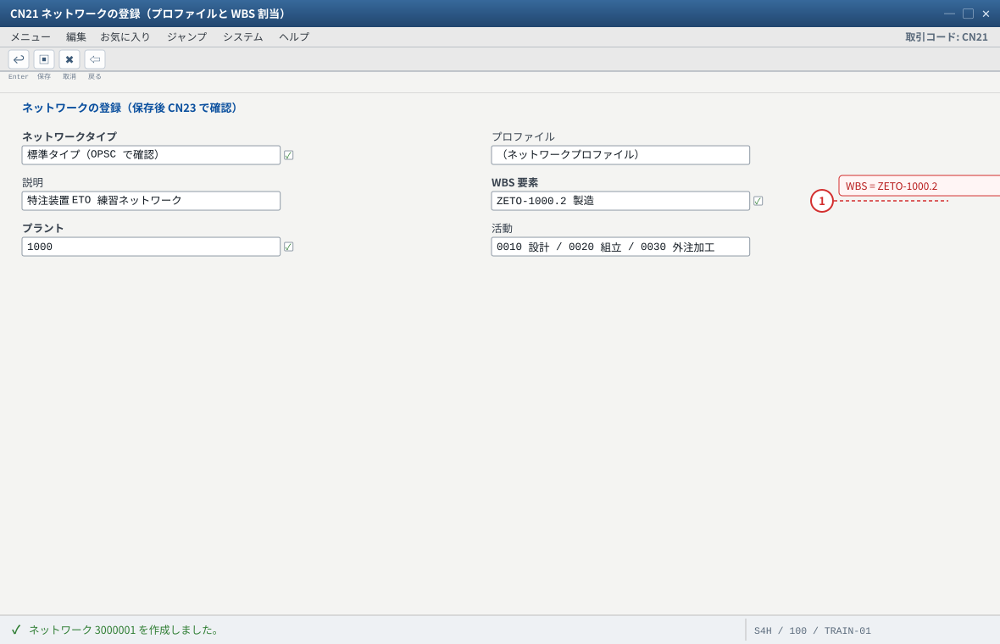
- 1 割当先は「製造」の勘定設定要素。ここを構造要素にすると指図・在庫の行き先にならない
自システムでの確認：保存後の採番結果（ネットワーク番号）を記録してください。CN23 で活動と作業区・日程を確認します。
予算プロファイルと可用性管理
CJ30 / CJ32 / CJBV / CJ31- 目的
- WBS 予算を入れて、発注や実績が予算を超えそうなときに警告/エラーを出す（可用性管理）。
- C5 のプロジェクトプロファイルで予算プロファイルが割当たっているか確認（未割当なら予算機能が使えない）。
- 練習①でプロジェクトを作成後、
CJ30（元予算の変更）で WBS に予算を投入（例：WBS.1に 5,000,000 JPY）。 CJ32（予算の解放）で実行可能にする。予算が解放されないと購買・指図が止まることがある。CJBV（可用性管理の活性化）を実行し、予算超過時の挙動（警告/エラー）を体験する。CJ31で予算を照会。- （発展）
CJ34予算振替、CJ37予算補足、CJ35/CJ38予算返還。
CJ31 で元予算・解放額・使用額（実績＋コミット）が見える。CJI5 でコミットメント（発注残）を確認。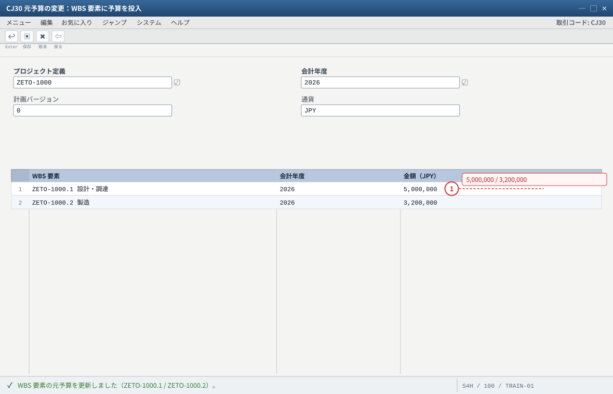
- 1 予算の合計は受注金額 5,000,000 と計画原価 3,200,000。計画と予算を一致させておくと予実が読める
自システムでの確認：予算プロファイルがプロファイルに割当たっていないと、そもそも予算を投入できません（C5）。「Budgeted」でロックされた場合はステータス系の機能で解除が必要なことがあります。
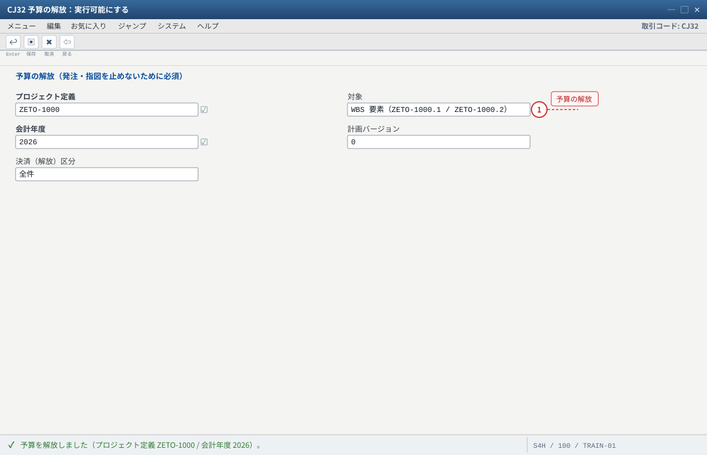
- 1 解放されていないと購買・製造指図がブロックされることがある（可用性管理の対象になる）
自システムでの確認：CJ31 で「解放額」が 0 のままだと未解放です。解放後に CJBV で可用性管理を活性化すると、超過時の警告/エラーを体験できます。
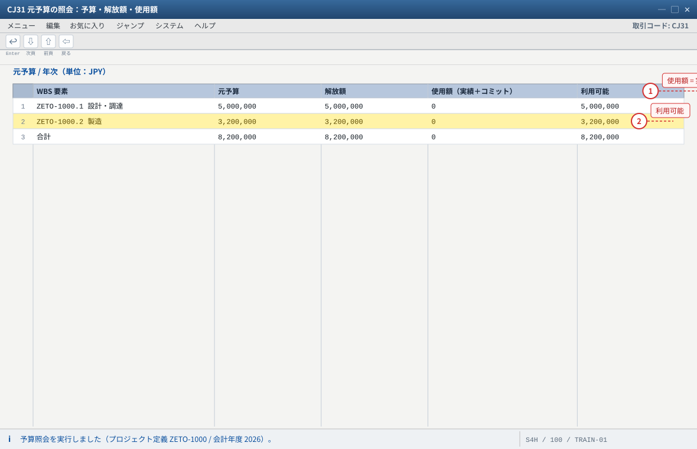
- 1 使用額は「実績＋コミットメント」。発注しただけでも予算を食う点が ETO の予算管理の勘所
- 2 実績・在庫が動くとここが増える（練習③・④の確認ポイント）
自システムでの確認：列見出しは画面の並びに合わせています。名称は環境により異なる場合があります。コミットメントは CJI5 で明細を確認できます。
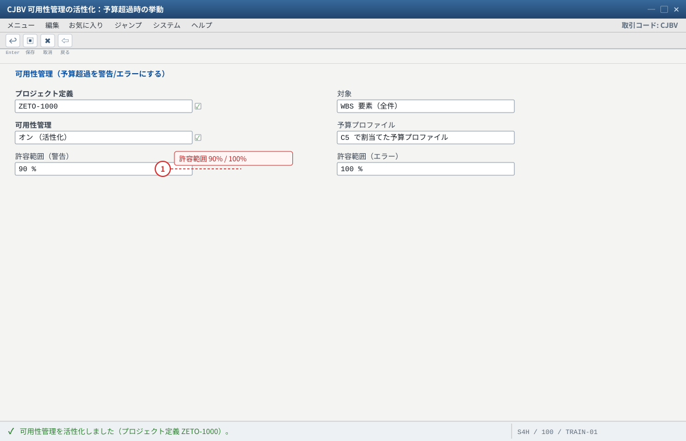
- 1 許容範囲は業務要件。100% でエラーにするか警告で止めるかを業務と合意してから設定する
自システムでの確認：予算超過の挙動は予算プロファイルの許容範囲に依存します。練習⑤ の発展 3 で実際に超過させて、警告かエラーかとメッセージ番号を記録します。
評価付プロジェクト在庫（最重要）
CJ20N（プロジェクト定義）- 目的
- プロジェクト在庫 Q を数量＋金額で持たせる。これが MTO（E）との決定的な違い。
CJ20N→ 練習① で作るプロジェクト定義を開く → 「プロジェクト在庫」セクションの 評価付プロジェクト在庫（Valuated project stock） を ON にする。- WBS のフラグを整理：
・.1 設計・調達→ 請求要素（請求の宛先）
・.2 製造→ 勘定設定要素（指図・発注・在庫の行き先）
・.3 据付・試運転→ 勘定設定要素 - 品目側の前提（C2）と合わせて 4 点セットが揃っていることを確認する。
CJ20N/CJ03 で評価付フラグが見える ② MM03 MRP4 個別所要量 ③ 戦略グループ→所要量クラスの評価区分 M ④ 受注明細の WBS。4 点が揃うまで進まないのが、この教材で唯一の「絶対ルール」。
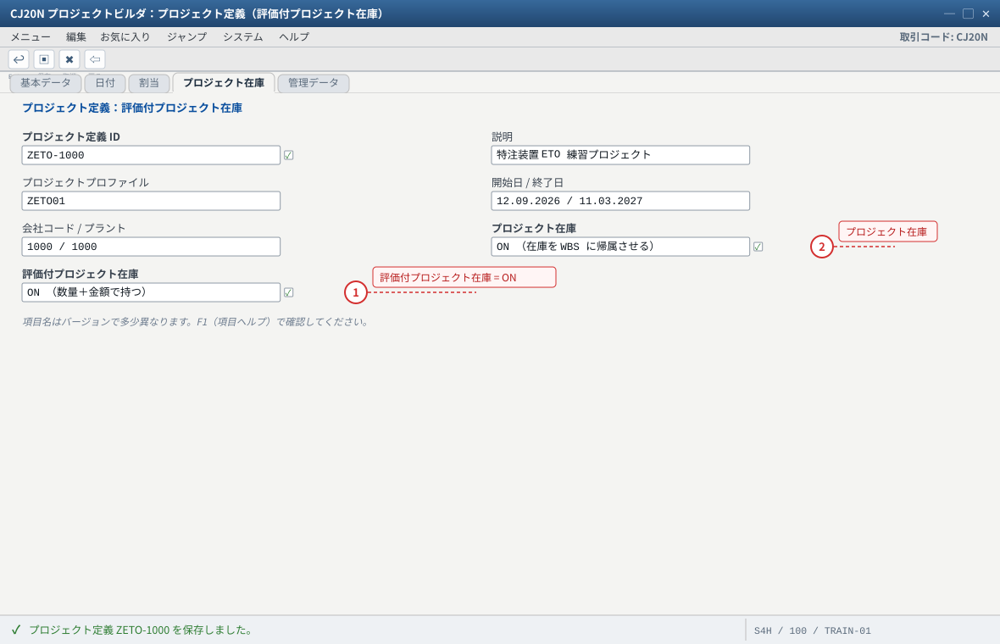
- 1 ここが MTO（受注在庫 E）との決定的な違い。数量だけでなく金額も持たせるフラグ
- 2 プロジェクト作成直後に設定する。後から ON にすると既存在庫の扱いで不整合が起きる
自システムでの確認：① CJ20N / CJ03 で評価付フラグが見える ② MM03 の MRP4 個別所要量 ③ 戦略グループ → 所要量クラスの評価区分 M ④ 受注明細の WBS。この 4 点が揃うまで先へ進まないのが本教材の絶対ルールです。
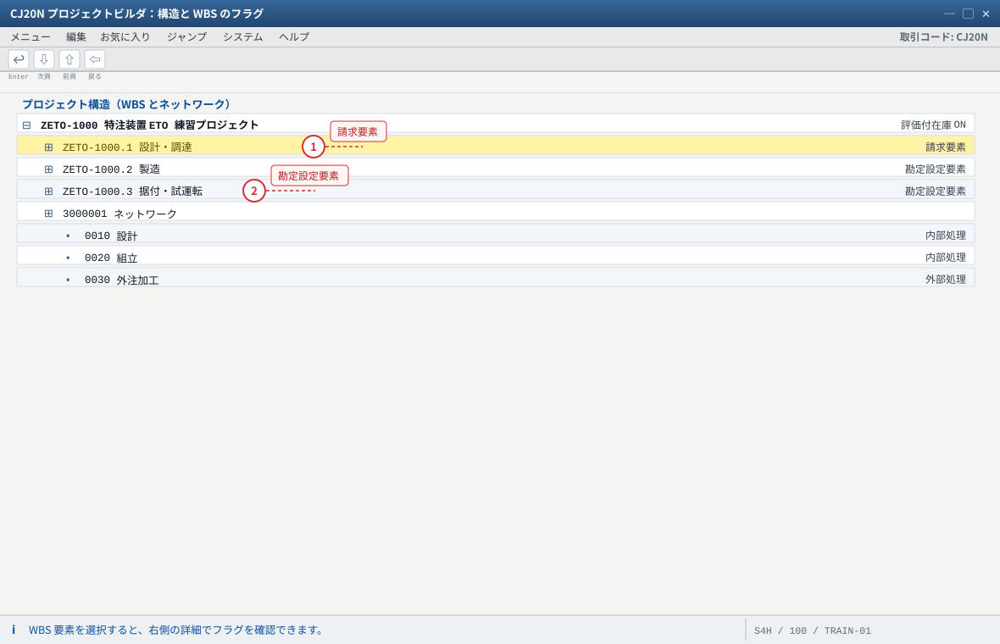
- 1 請求要素は 1 つの WBS にだけ立てる（受注明細がここを指す＝収益の宛先）
- 2 製造に使う WBS は勘定設定要素。構造要素だけでは指図/発注/在庫をぶら下げられない
自システムでの確認：WBS のフラグ名称（請求要素 / 構造要素 / 勘定設定要素 / 計画要素 / 統計）は詳細画面のタブ構成により表示位置が異なります。ここが ETO の骨格です。
受注明細の WBS 割当（SD × PS 接続点）
VOV7 / VOV4 / VA02- 目的
- 受注明細に WBS を割り当て、需要をプロジェクト（WBS）に帰属させる。ここが ETO の SD-PS 接続点。
- まず実測：
VA01（またはVA02）で明細を作り、明細詳細に「WBS 要素」項目が出るか、入力できるかを確認する。
・項目が出ない/入力できない → その明細カテゴリは WBS 割当を許していない。 - 明細カテゴリを確認：
VOV7で該当の明細カテゴリを開き、勘定設定・請求関連（請求計画の許可を含む）を読み取る。VOV4でどのキーで決まるかを確認。 - 標準で使える明細カテゴリが無い/要件に合わない場合：コピーして
ZETO（例）明細カテゴリを作成し、WBS 割当・請求計画・請求関連を許可する。VOV4 に決定キー（伝票タイプOR+ 品目カテゴリグループ）を追加。 - 請求要素（
.1）を明細の WBS に指定して保存する。
VA03 → 明細 → WBS 要素に入力値がある、所要量タイプが Q 系（Cloud は E21）になっている。参考：SAP Help（Cloud）は「受注の場合、WBS 要素を
CBAO（マイルストーン請求計画）などの明細カテゴリの明細に割り当てることができる」と説明している。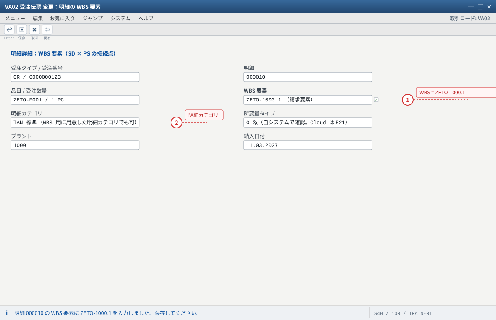
- 1 ここに WBS が入ると需要がプロジェクト（WBS）に帰属し、所要量タイプが Q 系になる
- 2 項目が出ない/入力できない＝その明細カテゴリが WBS 割当を許していない（VOV7 を確認）
自システムでの確認：所要量タイプ（Q を示す値）と、WBS を割当てられる明細カテゴリは環境ごとに異なります。VA03 の明細と VOV7 / VOV4 で実測してください。
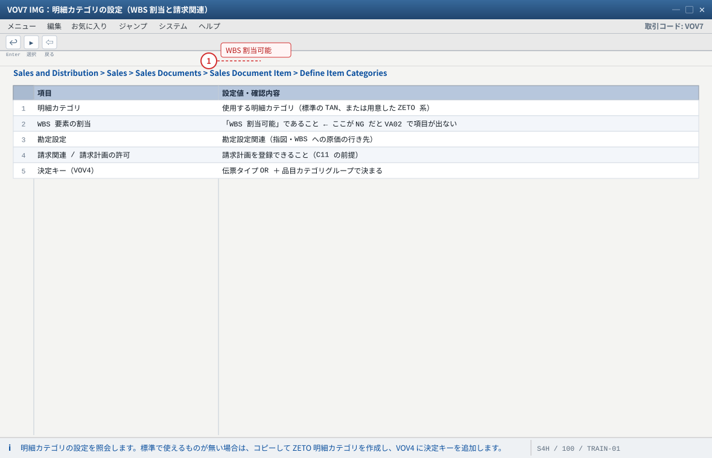
- 1 「明細に WBS が入らない」ときは、まずここ（VOV7）と決定キー（VOV4）を疑う
Public Cloud では明細カテゴリを新規作成できません。交付済みの明細カテゴリ（例 CBAO＝マイルストーン請求計画）から選びます。
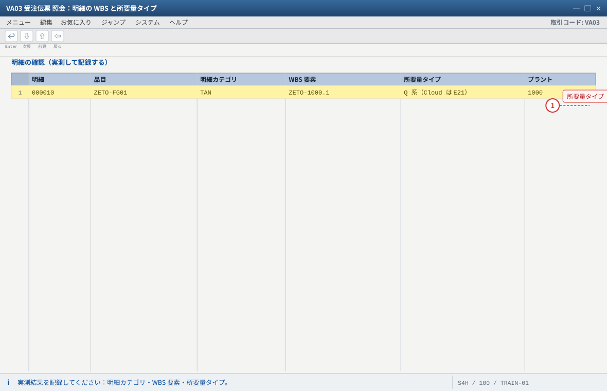
- 1 所要量タイプが Q 系なら需要はプロジェクト在庫として流れる。KE（MTO 用）なら MRP3 の戦略グループを疑う
自システムでの確認：所要量タイプの値は環境ごとに異なります（S/4HANA Cloud 6GD は E21 特別在庫 Q）。判定は OVZG の所要量クラスと突き合わせて行います。
請求計画／出来高請求の前提
VA02（請求計画）/ VF01 / VTFL請求タイプ : F2（標準）
出荷→請求コピー制御 : VTFL（有効であること）
請求計画 : 受注明細（またはヘッダ）で「請求計画」→ 日付ベース 2 行：
・1 行目：契約締結時 30%（1,500,000 JPY）
・2 行目：完成・検収時 70%（3,500,000 JPY）
出来高請求を使う場合 : 請求計画タイプ（出来高）＋マイルストーン（ネットワーク活動/マイルストーン）と請求の紐付け
VA02→ 明細 → メニュー「明細」→「請求計画」→ 上記 2 行を登録（日付・金額 or パーセント）。- 保存後、
VF01（請求タイプF2、納入日付/請求日付範囲）で請求できれば前提 OK。請求計画に載っていない日付では請求できないのがポイント。 - （出来高の場合）ネットワーク活動のマイルストーンと請求計画の紐付けを確認（
CN21/CN22のマイルストーン）。
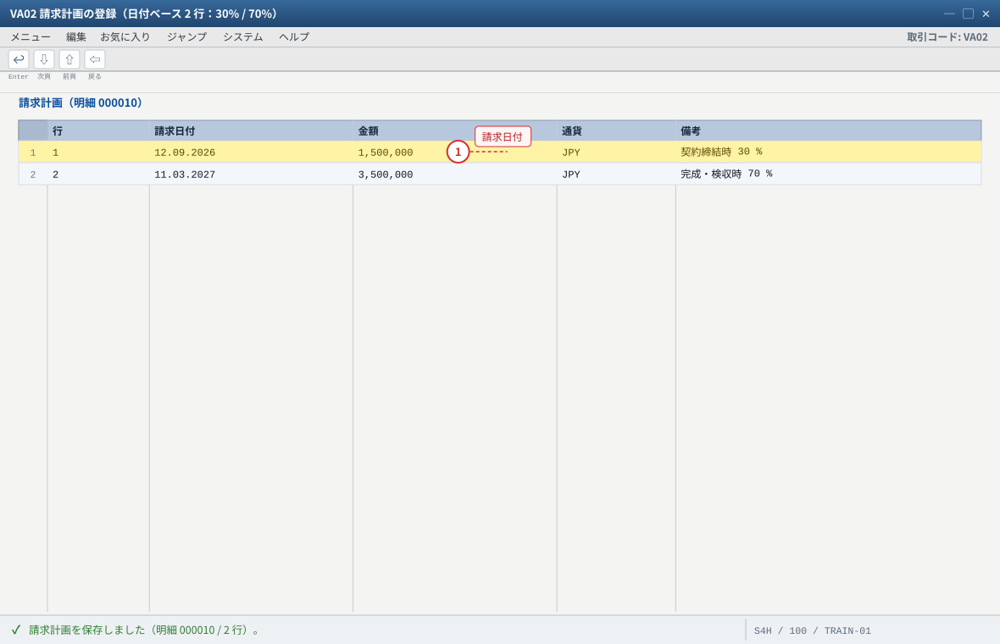
- 1 請求計画は「いつ請求できるか」の一覧。ここに無い日付では請求できない（KBA 2763512）
自システムでの確認：請求計画を登録するには明細カテゴリの請求関連が有効である必要があります（VOV7）。請求計画タイプに「出来高」を使う場合はマイルストーンと紐付けます。
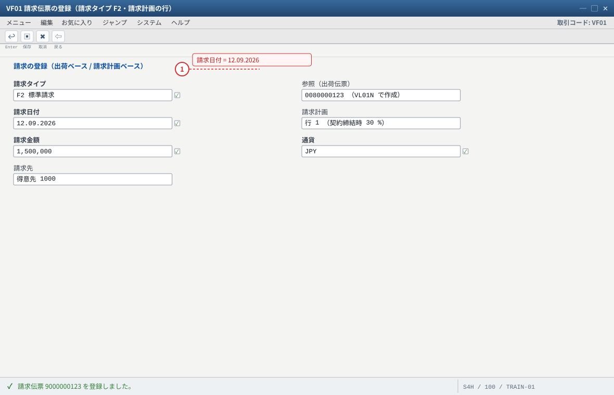
- 1 請求日付が請求計画の行と一致していることが条件。VF01 はまずここで止まる
自システムでの確認：出荷ベースで一括請求すると 5,000,000、請求計画ベースだと該当行の金額になります。どちらで運用するかを先に決めてください。
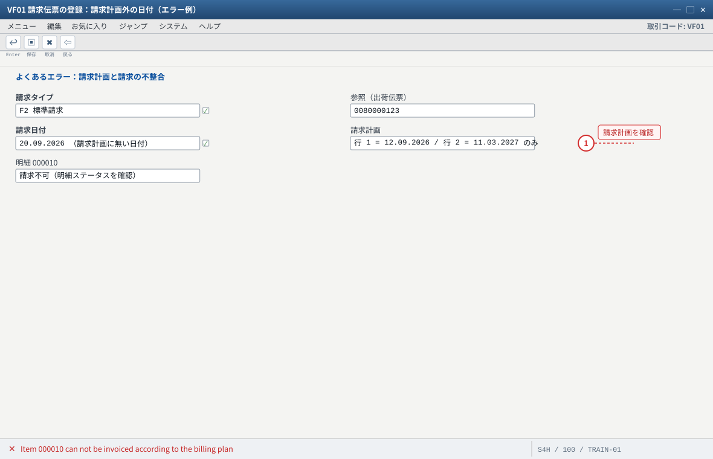
- 1 請求計画の日付・金額と、明細カテゴリの請求関連が噛み合っていないと出る（KBA 2763512）
対処：VA03 で請求計画の日付・金額を確認し、請求日付を合わせるか請求計画に行を追加します。明細カテゴリの請求関連（VOV7）も併せて確認します。
決済の前提（WBS・指図・受注）
CJB1 / CJB2 / CJ88 / CJ8G / KO88 / VA88WBS の決済ルール : CJB2（個別）/ CJB1（一括）— 決済受信者（例：会社コードの損益勘定） 指図の決済 : KO88（個別）/ CO88（一括）。MTO/ETO では受注・WBS 側へ 受注の決済 : VA88（得意先受注の決済） WBS の決済 : CJ88（個別）/ CJ8G（一括） 決済プロファイル : プロジェクトプロファイル経由で既定が決まる（C5 で確認）
CJB2で WBS の決済ルールが存在するか確認（無ければ作成）。- 練習⑤ で
CJ88（対象：WBS、期間、決済タイプ）を実行し、ログとCJIC（決済明細）を確認する。 - 指図は
KO88、受注はVA88であることを整理して覚える（SAP Help「S/4HANA information for Cost Object Controlling」に決済トランザクションの一覧がある）。
CJI3 の残高が整理される。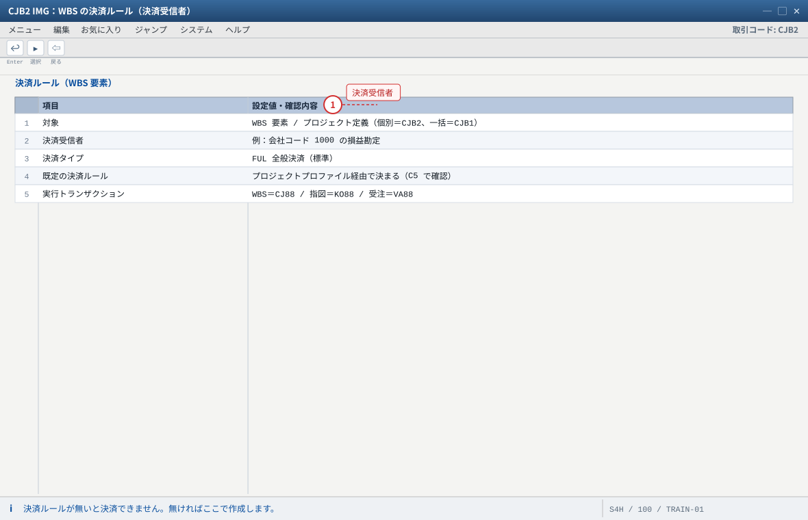
- 1 決済ルールが無い＝月末に原価が WBS へ確定できない。プロファイルの既定と突き合わせる
「指図は KO88、受注は VA88、WBS は CJ88（一括は CO88 / CJ8G）」と整理して覚えます。決済タイプの値は環境で異なる場合があります。
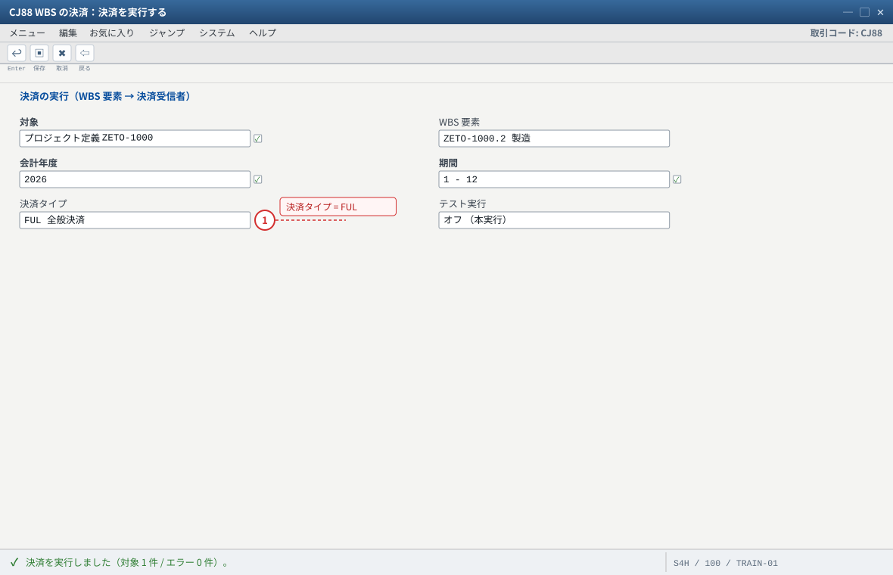
- 1 実行後は CJIC（決済明細）と CJI3 を見て、何がどこへ流れたかを確認する
自システムでの確認：テスト実行で先に結果を見る癖をつけてください。決済後に CJI3 の残高が整理され、決済列がマイナス表示になることがあります（正常）。
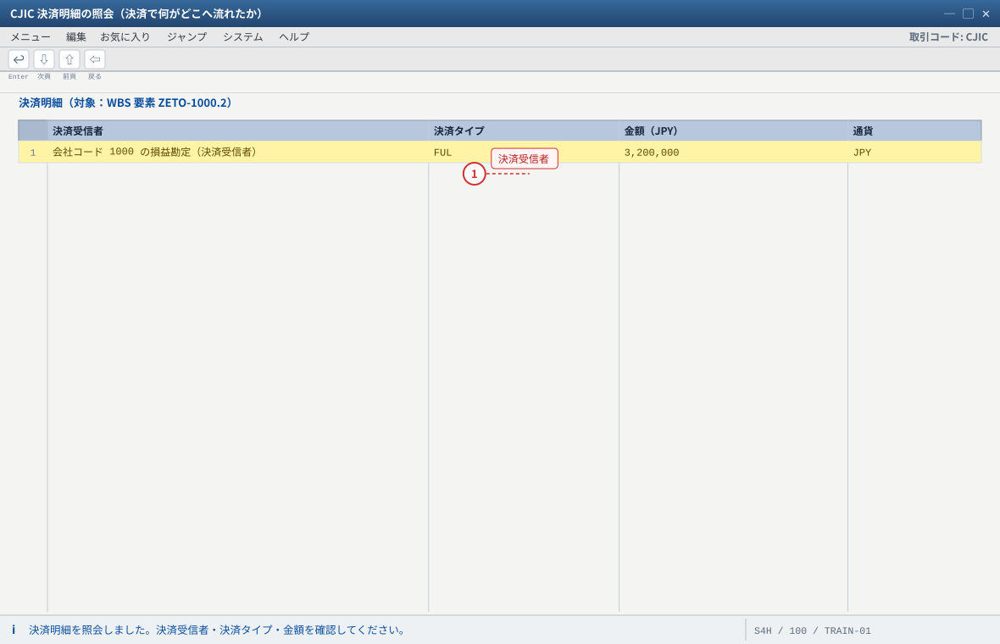
- 1 決済で WBS の原価・収益が外へ出る。CJI3 の「決済」列と突き合わせて動きを説明できるようにする
自システムでの確認：金額は決済対象（WBS に集まった原価・収益）と決済ルール次第で変わります。CJID（一括の決済明細）も同じ見方です。
結果分析と収益認識の前提
KKA2 / KKAJ / KKAX / KKA0P- プロジェクト/WBS に割当てられる結果分析キーと収益認識キー（工事進行基準/出来高/完了基準 など）を確認し、どれが使われているかを記録する。
KKA2（個別）またはKKAJ（一括）で結果分析を実行し、WIP と収益が計算されることを確認。KKAXで WIP を照会。- 期間のカットオフ（結果分析の対象期間）を確認（
KKA0P系）。 - （発展）計画バージョン、原価計算シート、`CJA2`（受注高/出来高）も確認すると、ETO の損益の全体像がつながる。
KKAX（WIP 照会）と CJI3 を見て、「原価・収益・WIP の 3 つがどこに出ているか」を自分の言葉で説明する。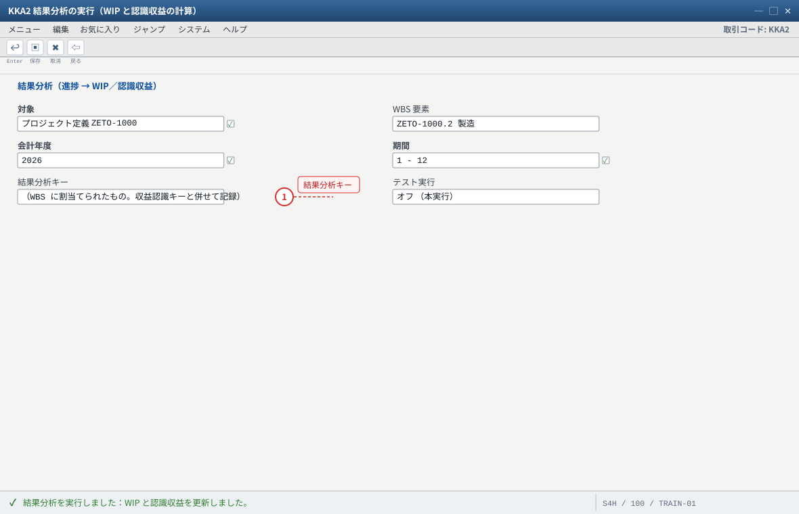
- 1 結果分析キー／収益認識キー（工事進行基準・出来高・完了基準など）が何を使うかを最初に記録する
収益認識の会計ルール（IFRS15 など）は独立領域です。本站は「進捗 → 結果分析 → WIP/収益がどう動くか」を確認するところまで。一括は KKAJ、対象期間の管理は KKA0P 系です。
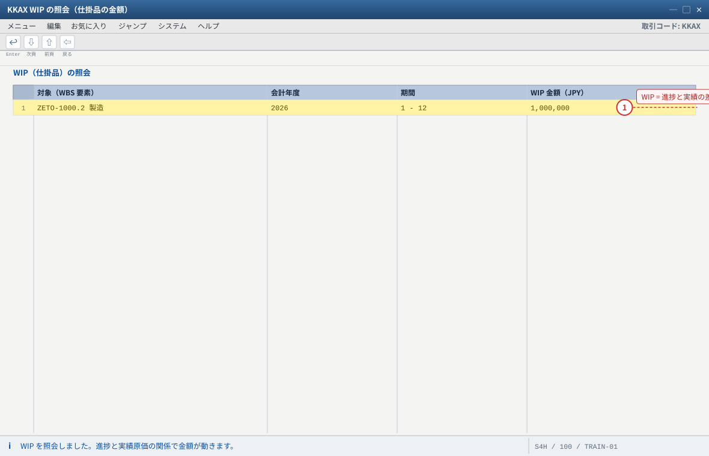
- 1 例：実績原価 3,000,000 / 計画原価 3,200,000 / 進捗 60% → 認識収益 3,000,000 で WIP 0。進捗 40% なら WIP 1,000,000
進捗の決定は CNE1（個別）/ CNE2（一括）、活動の実績は CN25 / CN27 が材料になります。ここで「原価・収益・WIP の 3 つがどこに出ているか」を自分の言葉で説明できるようにしてください。
MRP 実行と勘定設定の伝搬
MD50 / MD51 / MD01N / MD04受注 MRP（受注単位） : MD50 プロジェクト MRP（案件単位）: MD51（プロジェクト定義/WBS/ネットワークを指定） 全体 MRP : MD01N（MRP Live。MRP リストは作られない → MD04 で確認） 見るべき点 : 計画手配の「勘定設定 = WBS」と「在庫区分 = Q（プロジェクト在庫）」
- 練習② で
MD51を実行し、MD04（品目/WBS 視点）で計画手配を確認する。 - 計画手配の明細を開き、勘定設定（WBS 要素）と在庫区分を確認する。ここが空/自由在庫なら C9・C10・C2 を疑う。
CO40（個別変換）/CO08（受注紐づき登録）で製造指図を作成し、指図の勘定設定が WBS を引き継いでいることを確認する。
MD04 の計画手配 →「明細」、CO03 のヘッダ/勘定設定。表なら PLAF/AUFK-PS_PSP_PNR を SE16N で確認。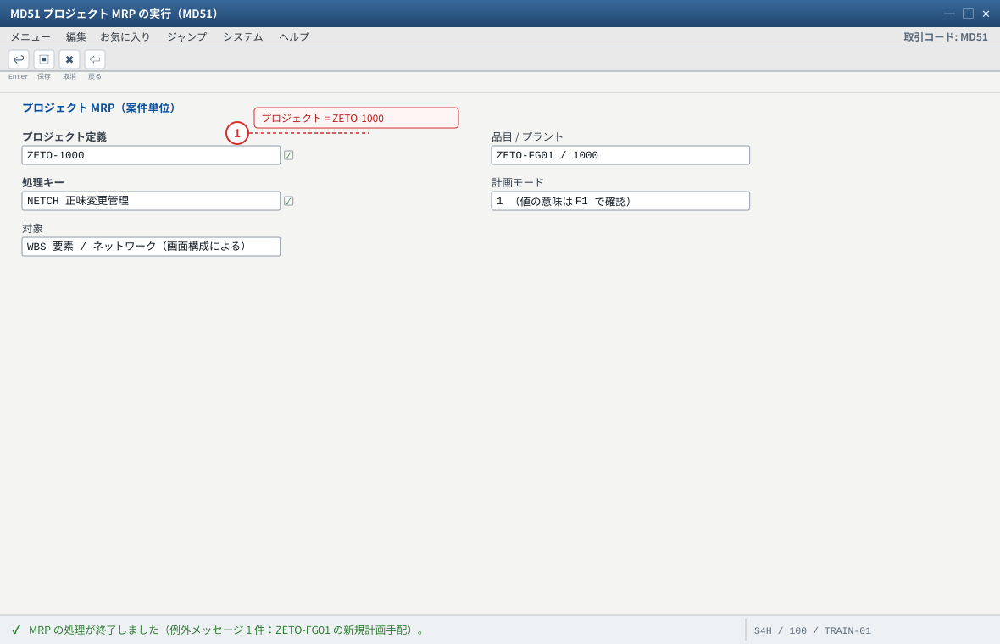
- 1 計画手配の「勘定設定＝WBS」と「在庫区分＝Q」がこの実行の成果物。MD04 で確認する
入口の違いを意識する：MD50＝受注単位、MD51＝プロジェクト単位、MD01N＝全体 MRP（MRP Live。MRP リストを作らないため MD04 で確認。KBA 2640393 / Note 1914010）。
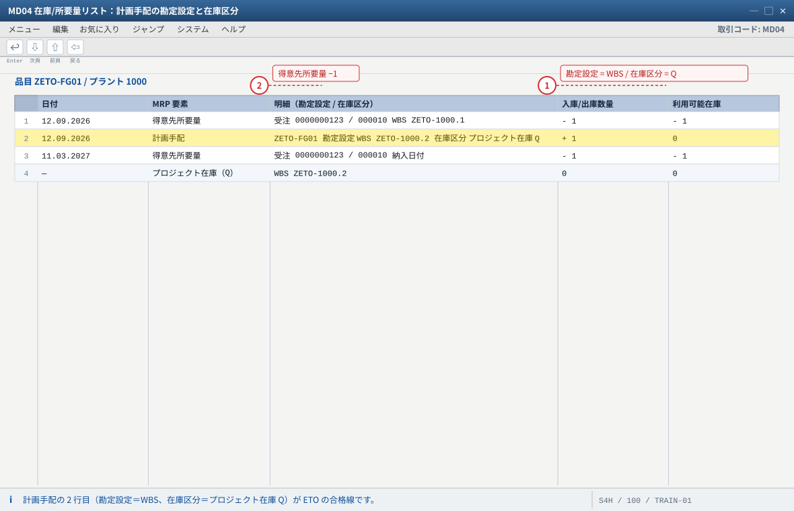
- 1 ここが空／自由在庫なら C2（個別所要量）・C9（評価付在庫）・C10（受注明細の WBS）を疑う
- 2 得意先所要量に WBS が付いている＝需要がプロジェクトに帰属している証拠
列見出しは画面の並びに合わせています（名称は環境により異なる場合があります）。表で確認するなら PLAF（計画手配）を SE16N で参照します。
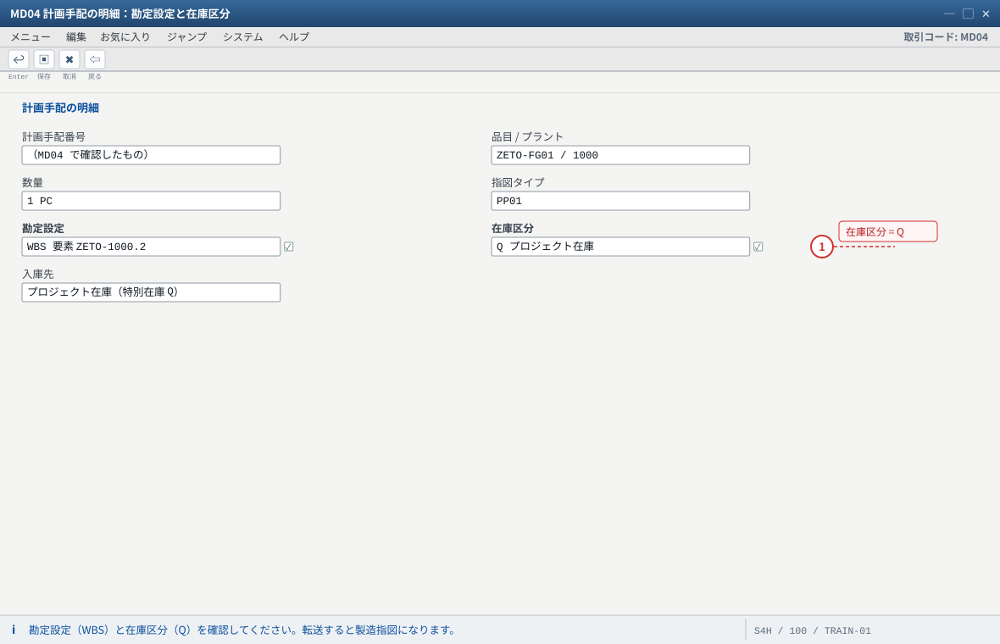
- 1 在庫区分が自由在庫／空なら Q が成立していない。4 点セット（C2・C9・C10）を点検してから指図に進む
計画手配 → 製造指図の変換（CO40）や、受注紐づけの指図登録（CO08）でも、この勘定設定と在庫区分が引き継がれることが前提です。
在庫・移動タイプ・自動転記
MIGO / VL02N / OBYC261 : 指図/ネットワークへの部品出庫（勘定設定 = WBS → 原価は WBS へ） 101 : 指図への入庫 → プロジェクト在庫 Q（評価付なら金額も計上） 601 : 出荷の出庫確認（在庫区分 Q から） 確認 : MMBE / MB52 の「プロジェクト在庫」欄、SE16N: MSPR（SOBKZ = Q、WBS 付き）、MATDOC（移動タイプ） 会計 : 在庫・消費・差異の勘定は OBYC（BSX / GBB 系）。決済後に FI へ
- 練習③ で 261 → 101 を実行し、
MMBEのプロジェクト在庫が 1 式になることを確認する。 SE16NでMSPRを開き、SOBKZ = Qと WBS が記録されていることを確認する（「Q は表に書かれている」ことを自分の目で見る）。- （参考）
MSKAは受注在庫 E の表。MTO は MSKA、ETO は MSPR と覚える。
MMBE に「プロジェクト在庫」と「自由在庫 0」、MSPR に Q のレコード。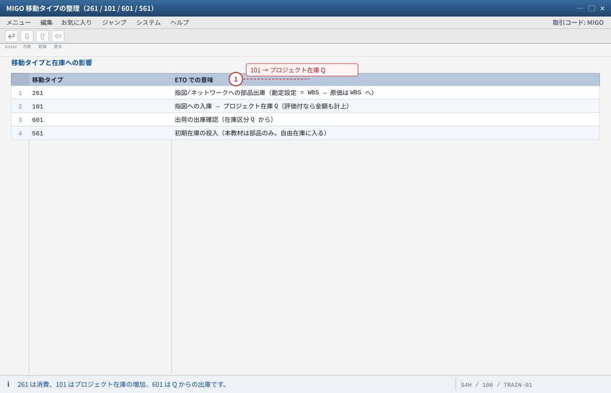
- 1 Q（プロジェクト在庫）が成立していると、101 の入庫先が自動的に特別在庫 Q になる
会計側では在庫・消費・差異の勘定が OBYC（BSX / GBB 系）で決まります。実機では CL20 / OMWD 系の設定と突き合わせて確認してください。
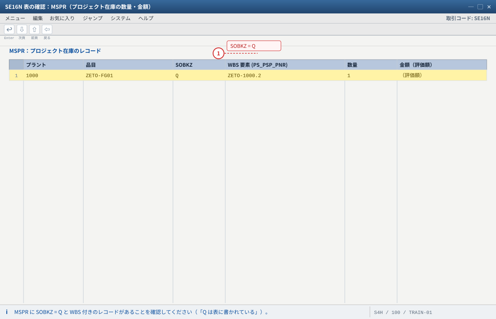
- 1 MTO は MSKA（受注在庫 E）、ETO は MSPR（プロジェクト在庫 Q）。表で確認する癖をつける
自システムでの確認：数量・金額の項目名は表の項目（F1）で確認してください。移動の証跡は MATDOC（旧 MSEG）で移動タイプを追えます。
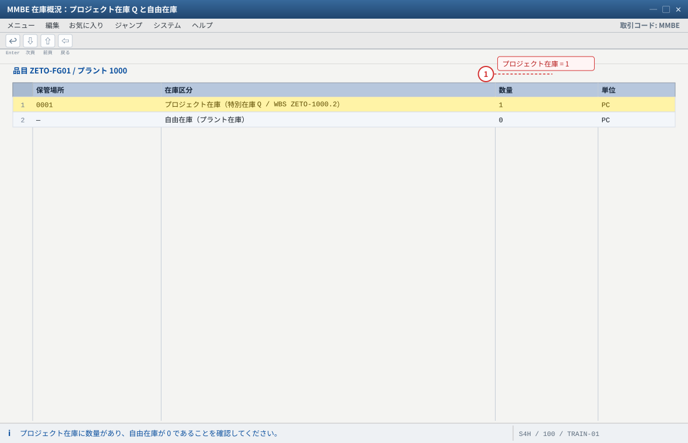
- 1 「Q に 1 式、自由在庫 0」が ETO の合格線。MTO の受注在庫 E と同じ意味を持つ
MB52 でも「プロジェクト在庫」欄に数量が出ます。評価付なら金額欄（または MB5B 在庫推移）で金額も確認してください。
C16 Public Cloud（S/4HANA Cloud Public Edition）差异对照
| 本站 STEP | On-Premise（主线） | Public Cloud 的做法 / 限制 |
|---|---|---|
| 整体交付 | PS + SD + PP + CO の設定を自分で作る | スコープアイテム 6GD（Engineer Products and Systems – Project with Production）で交付。Test Script が唯一の手顺書になる |
| C2 品目マスタ | 戦略グループを自システムで特定して設定 | 6GD の Master Data 手順に「Strategy Group: E2」と明記。E2 は 6GD 活性後に利用可能（KBA 3623492）。所要量タイプは E21（特別在庫 Q）。プロジェクト在庫シナリオでは別途「Event-Based Production Cost Posting (3F0)」のマスタデータスクリプトが必要 |
| C5/C6/C7 PS 設定 | OPSA・ネットワークタイプ等を自由に設定 | 原則 SSCUI の範囲のみ。ネットワークの利用範囲はスコープアイテム次第（6GD は WBS 単位の計画・実行が中心） |
| C10 明細カテゴリ | VOV7/VOV4 で自作可 | 新規作成は不可。交付済みの明細カテゴリ（例 CBAO＝マイルストーン請求計画）から選ぶ |
| C11 請求 | 請求計画（日付/出来高）＋ VF01 | Fiori の請求計画アプリ＋請求アプリ。イベントベースの収益認識が前提のシナリオあり |
| C12/C13 決済・結果分析 | CJ88・KKA2 系 | Cloud はイベントベースの原価転記・収益認識（3F0）が中心。アプリ名が異なる |
| C15 在庫 | MIGO で 261/101、VL02N で 601 | Fiori アプリ（在庫移動の転記・出荷の変更）。プロジェクト在庫 Q の出荷で PGI できない既知問題あり → KBA 3623492（戦略グループ E2・6GD の活性状況を確認） |
| 補足 | — | Cloud では「売上から BOM を展開したい」要件に対し E2 を使わない選択肢もある（受注設計×完成品受注の組み合わせはスコープ要件次第）。必ず Test Script と業務要件で判断する |
ZETO プロファイルや明細カテゴリを作れません。本教材は「機制を理解する」ために使い、実機は 6GD の Test Script で練習してください。差異表の各欄が、Cloud 顾问必须能答出来的对照点です。配置完了チェックリスト
- C0
CJ20Nでプロジェクト作成と WBS 採番ができる。 - C1 部品 RM01 100 PC / RM02 500 PC が
MMBEにある。 - C2
MM03：販売組織2 品目カテゴリグループ／MRP1 PD・EX・E／MRP3 戦略グループ／MRP4 個別所要量のみ。 - C2
OVZGで、その戦略グループが指す所要量クラスの評価区分を確認した（M 系か）。 - C3
CS03BOM（RM01×2・RM02×8）／CA03工程 0010。 - C4
VK13PR00 = 5,000,000 JPY（得意先 1000 × ZETO-FG01）。 - C5 使用するプロジェクトプロファイル（例
ZETO01）と、その番号範囲・予算プロファイル・決済パラメータを説明できる。 - C6 ステータスプロファイルと「解放」の意味を説明できる。
- C7
CN21でネットワークと活動を作成できる（番号範囲に空き）。 - C8
CJ30予算投入 →CJ32解放 →CJ31で確認。可用性管理CJBVの挙動を理解。 - C9 プロジェクト定義の評価付プロジェクト在庫が ON、WBS
.1が請求要素、.2が勘定設定要素。 - C10 受注明細に WBS を入力でき、所要量タイプが Q 系であることを実測で確認（どちらの明細カテゴリを使うか記録）。
- C11 請求計画（30%/70%）を登録し、
VF01で請求できる。 - C12 WBS の決済ルールを確認（
CJB2）。CJ88/KO88/VA88の役割差を説明できる。 - C13 結果分析キー/収益認識キーを確認し、
KKA2→KKAXの流れを説明できる。 - C14
MD51実行後、計画手配の勘定設定 = WBS・在庫区分 = Q を確認した。 - C15
MMBEのプロジェクト在庫とSE16N: MSPR（SOBKZ = Q）を確認した。 - すべての変更がカスタマイジング依頼に入っており、ロールバック可能。